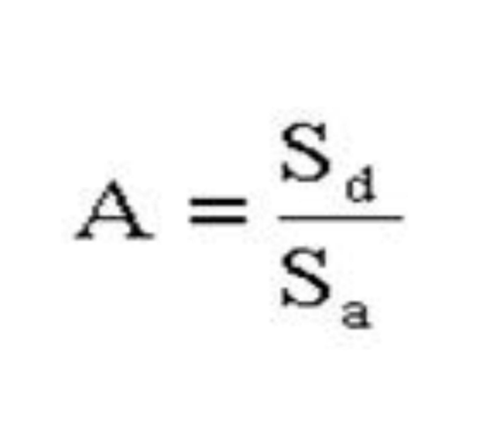
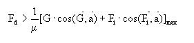
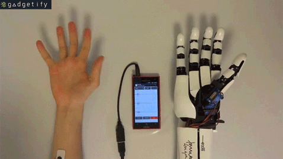
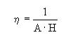

Criteriul cinematic se referă la raportul dintre deplasarea Sd la nivelul degetelor şi deplasarea Sa a sistemului de acţionare:
Respectarea acestui criteriu impune ca mecanismul să realizeze prin cinematica sa valori cît mai mari ale raportului A deci să se obţină deschideri cît mai mari ale degetelor în condiţiile unor deplasări cît mai reduse la sistemul de acţionare.
Criteriul preciziei de prindere, se referă la capacitatea mecanismului de care de a asigura prin structura sa posibilitatea mentinerii în limite restrinse a poziției centrului de prindere a obiectului la modificări ale diametrului acestuia. Dacă la dispozitivele de apucare din domeniul robotilor de montaj acest criteriu devine important pentru buna functionare a acestora, in cazul dispozitivelor terminale ale protezelor de membru superior el işi diminuează rolul datorită faptului că functiile de comandă şi control ale pozitionarii obiectului revin pacientului care prin sistemul vizual poate efectua corectiile necesare.
Criteriul forţei de apucare sau criteriul asigurării manipulării exprimă valoarea forţei de apucare minime ce trebuie dezvoltată de dispozitiv pentru a se evita alunecarea obiectului:
în care:
G - greutatea obiectului;
μ - coeficientul de frecare dintre obiect şi suprafaţa de contact cu degetul;
a - vectorul unitate al axei obiectului;
Fi - forţa de inerţie
Conform acestui criteriu, mecanismul optim corespunde obţinerii unei forţe de strîngere cît mai mari, deci a posibilităţii manipulării unor obiecte cît mai grele, în condiţiile dezvoltării de către sistemul de acţionare a unor forţe cît mai reduse.
Randamentul mecanismului se exprimă ca inversul produsului rapoartelor cinematic şi cinetostatic: - indică necesitatea realizării unui compromis în alegerea mecanismului: mecanismul care prin structura sa ar corespunde atît din punct de vedere cinematic (A=maxim) cît şi cinetostatic (H=maxima) conduce la obţinerea unui randament redus. Se impune deci fie limitarea performanţelor cinematice (dimensiunile obiectului) fie a celor cinetostatice (greutatea şi dinamica protezei) funcţie de tipul activităţilor în cadrul cărora proteza va fi utilizată de către purtător (igiena personală şi manipulări uşoare sau activităi solicitante).
